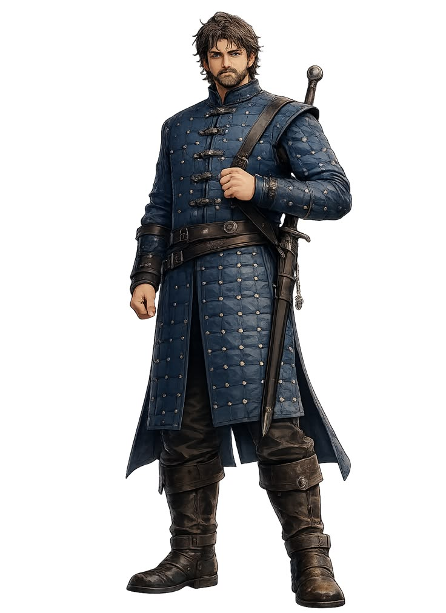
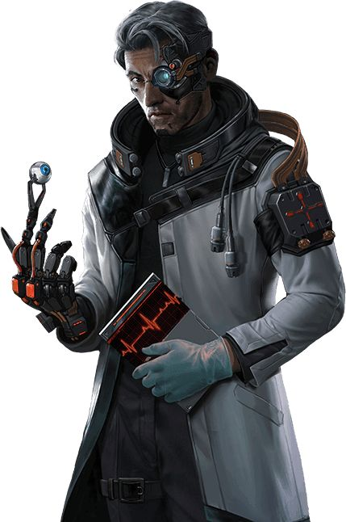
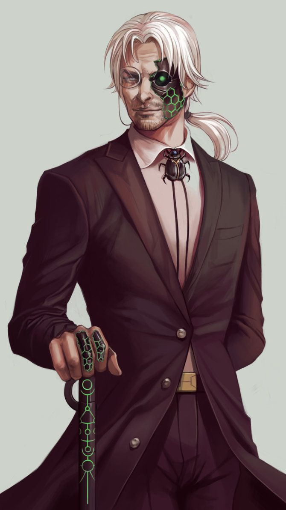
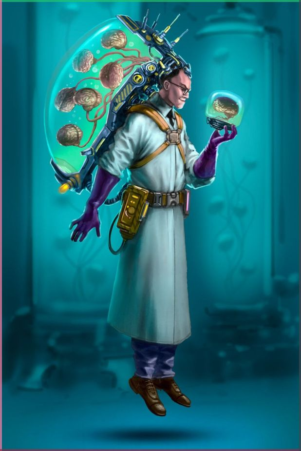

Papel e arco pertencem a este livro.
A ficha de cada personagem é global. Iara Vasquez, por exemplo, é protagonista aqui e antagonista em O Jardim de Ossos. Abrir biblioteca →
12 resultados
8 da biblioteca global
Papel: Protagonista

global
Protagonista
Iara Vasquez
"A piloto que ouve o vazio"
Arco: ruptura · caps. 1–24
19 capítulos
antagonista em outro livro

global
Protagonista
Andarilho-9
IA de bordo
Arco: despertar · caps. 7–24
12 capítulos
antagonista em outro livro

global
Antagonista
Kael Moreau
Comando da estação
Arco: queda · caps. 3–19
14 capítulos
morre no cap. 19

global
Mentor
Sena Myr
Engenheira-chefe
Arco: sacrifício · caps. 1–17
9 capítulos
só neste livro

global
Coadjuvante
Tomas Leal
Operador de rádio
Arco: lealdade
11 capítulos
sem vínculos

global
Coadjuvante
Nadia Ferrer
Médica de bordo
Arco: a definir
2 capítulos
arco incompleto

global
Figurante
Mira Vahl
Mercadora de relíquias
Apenas mencionada
0 capítulos
3 livros

global
Coadjuvante
Dariel Okonkwo
Navegador de deriva
Arco: resgate
6 capítulos
2 livros
Vincular personagem
Traga uma ficha da biblioteca e defina papel e arco neste livro.
Arco aqui
Relações locais
Aparições
Notas do autor
Nome, biografia e traços vivem na ficha global e valem para os 3 livros.
Os campos abaixo pertencem só a A Órbita Silenciosa.
Influência nos capítulos
POV em 13 de 24